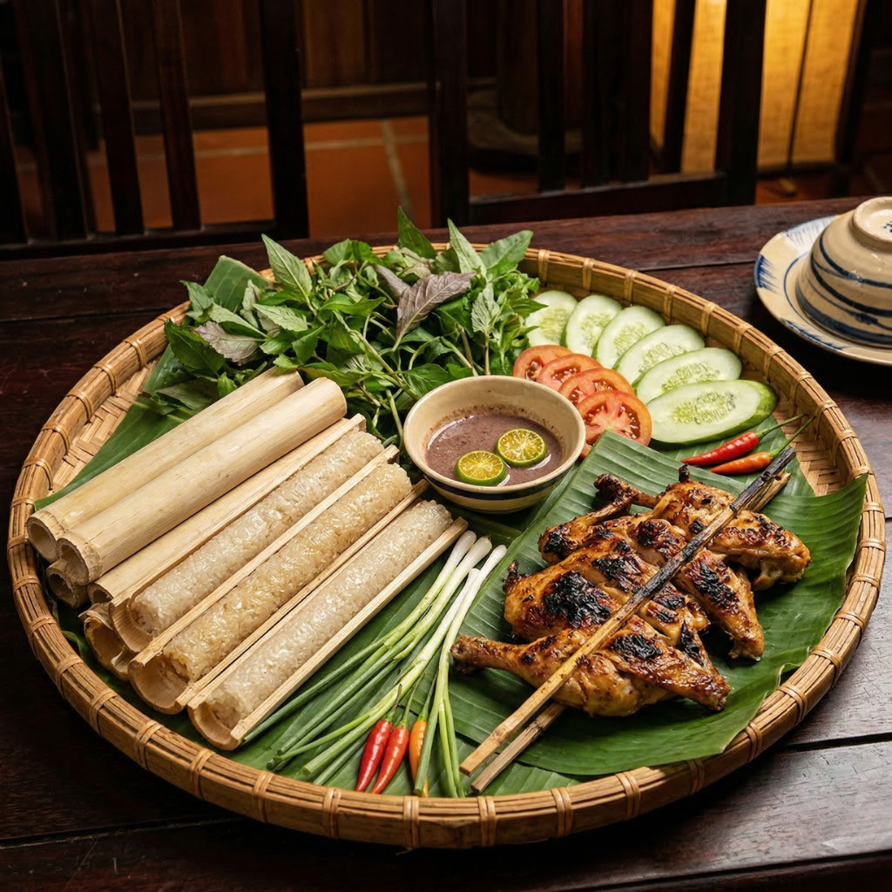

Liên hệ
Đăng ký
CÁCH LÀM CƠM LAM NGON
⏰
Chuẩn bị
6 tiếng
🍳
Nấu / Nướng
60 phút
🍽
Khẩu phần
4
👨🍳
Độ khó
3/5MỤC LỤC
Cơm lam là món ăn đặc sản mang đậm hương vị núi rừng của đồng bào các dân tộc Tây Bắc và Tây Nguyên. Với sự kết hợp tinh tế giữa vị dẻo thơm của gạo nếp nương, mùi thơm đặc trưng của ống tre tươi và vị ngọt của nước suối, cơm lam luôn mang đến một sức hút khó cưỡng. Hôm nay, hãy cùng khám phá cách làm cơm lam chuẩn vị, dẻo thơm ngay tại nhà nhé!

Cơm lam thơm dẻo hấp dẫn